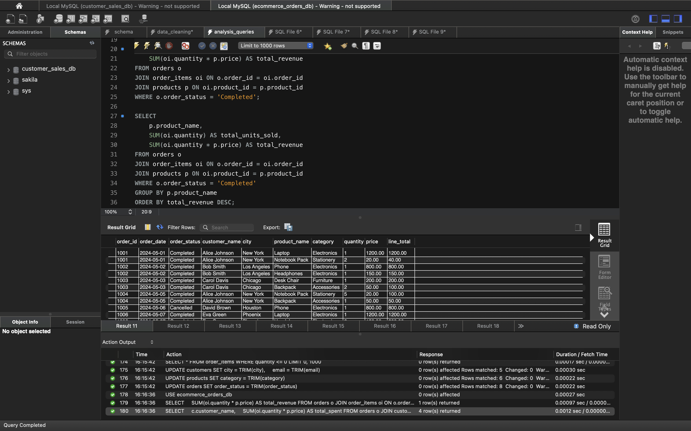
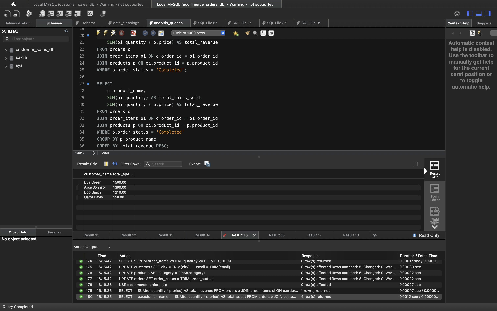
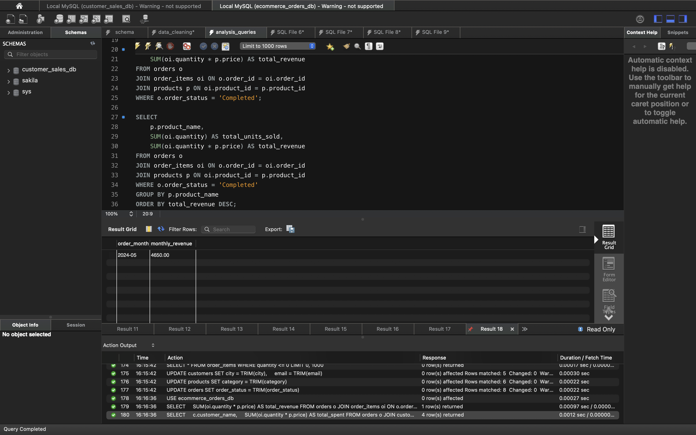
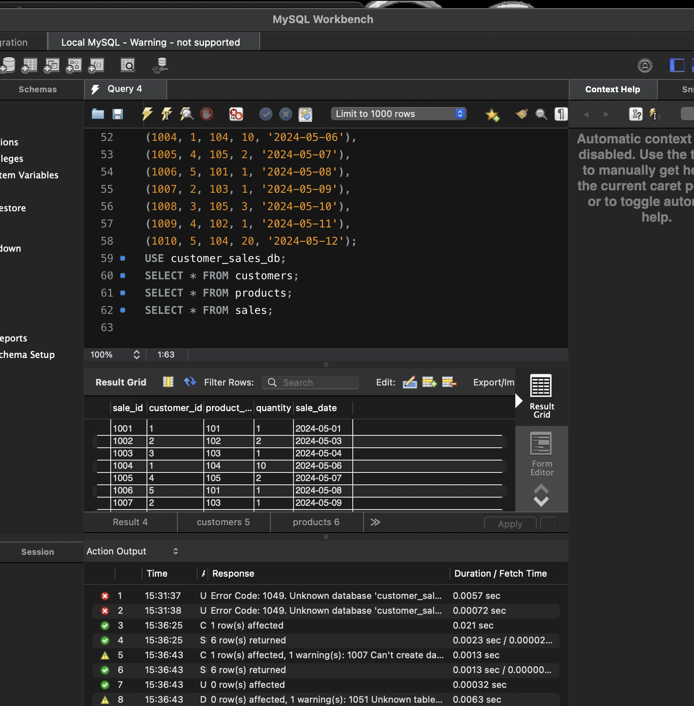
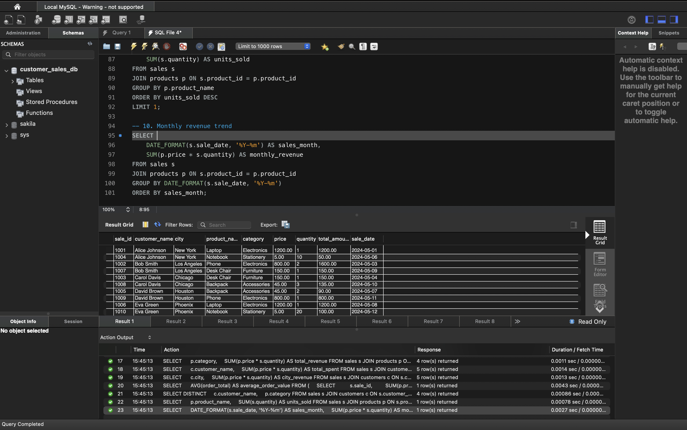
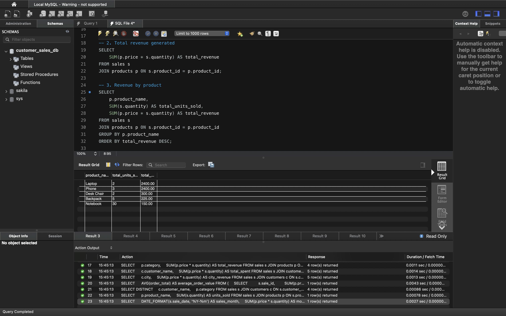

E-commerce Sales Analysis & Revenue Intelligence
A polished end-to-end analytics project focused on customer purchasing behavior, revenue concentration, product performance, and turning SQL outputs into decision-ready Tableau storytelling.

Project Summary
This project was built to simulate a real business analytics workflow: structuring relational data, performing SQL-based analysis, exporting reporting datasets, and presenting key findings through a Tableau dashboard and story-style output.
- Built with MySQL, MySQL Workbench, Tableau, and GitHub.
- Focused on product revenue, category performance, and top customers.
- Structured to demonstrate both technical execution and business communication.
Business Context
E-commerce teams need to know what drives revenue, which customers create the most value, and where product performance is strongest. This case study was designed to turn raw order data into insight that supports strategy, targeting, and operational planning.
Problem
Raw order data on its own does not clearly show revenue drivers, customer concentration, or category-level opportunity.
Approach
Build a relational SQL workflow, extract key metrics, and transform outputs into dashboard-ready data.
Outcome
A structured case study with technical analysis, screenshots, repo proof, and a Tableau presentation.
What This Project Covers
The work spans data structure, SQL querying, analysis logic, and communication of results.
Core Objectives
- Identify top customers by total spending.
- Measure revenue by product and category.
- Track monthly revenue behavior over time.
- Support business-facing decisions with clear reporting.
Technical Scope
- Relational schema design using customers, products, orders, and order_items.
- SQL joins across multiple tables.
- Use of SUM, COUNT, AVG, GROUP BY, and filtered business queries.
- CSV export workflow for Tableau dashboarding.
Key Insights
The analysis produced practical findings that a business team could act on immediately.
Revenue Concentration
A small group of high-value customers generated a disproportionate share of revenue, suggesting strong opportunity for targeted retention and loyalty strategies.
Product Performance
Premium and high-priced products contributed significantly more to total revenue than low-cost items, highlighting the value of category prioritization.
Trend Visibility
Time-based revenue views made it easier to identify patterns, understand momentum, and frame discussions around forecasting and growth.
Project 2 • E-commerce Orders Analysis
This is the more advanced project in the set and includes the Tableau dashboard and story presentation.



Project 1 • Customer Sales Analysis
This project established the core SQL workflow and analytics foundation that the later E-commerce project expanded on.



Project Links
Use these links to review the full technical work, supporting files, and visual presentation output.
What This Demonstrates
- Ability to structure and analyze relational data in SQL.
- Clear translation of analysis into business-facing insights.
- Capacity to present technical work in a polished portfolio format.
- Evidence of workflow maturity beyond just isolated query writing.
Business Recommendation
Focus future strategy on high-value customers and premium product segments, while using time-based revenue tracking to support better forecasting and campaign planning.